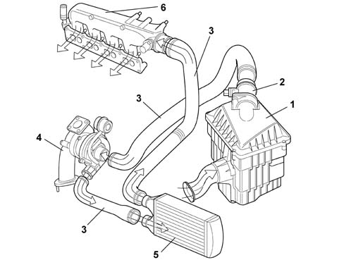

Introduction - ENGINE AIR SUPPLY CIRCUIT
- Path
- Descriptions > 10 ENGINE UNIT > 1048 ENGINE AIR SUPPLY CIRCUIT > Introduction - ENGINE AIR SUPPLY CIRCUIT
- Kind
- system description
- Applies to
- all engines; all production periods
- Interactive page
- https://sloeber94.github.io/elrnDB-fMltpl/en/#/2892429
Applies to: engines: 1.9 JTD 8V; all production periods
The intake air is filtered and directed to the exhaust gas turbocharger.
Before reaching the engine, the compressed air is cooled in the air/air heat exchanger.

1, Complete filter 2, Flow meter 3, Hose 4, Turbocharger 5, Air - air heat exchanger (intercooler) 6, Inlet chamber